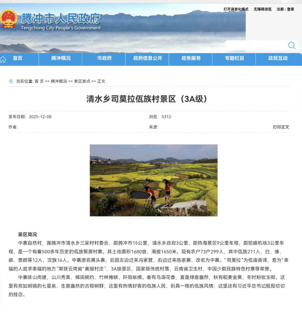

地图联动
云南地图与路线联动
当前默认聚焦 2020 年司莫拉节点，地图可切换不同年份，右侧详情和原文入口会同步更新。
当前聚焦
当前聚焦：腾冲 · 司莫拉

模块四
本页面以时间线为轴，呈现习近平总书记在云南的重要考察足迹节点，并补入与文旅融合、 民族交往交流交融相关的年度观察报道。地图、节点详情与原文入口同步联动， 方便在浏览中核验地点、活动和报道依据。
地图联动
当前默认聚焦 2020 年司莫拉节点，地图可切换不同年份，右侧详情和原文入口会同步更新。
当前聚焦

继续阅读
云南足迹负责把案例放回时间与空间中去理解，接下来可以进入项目概览查看研究结构，也可以到关于我们页补充建议与纠错信息。